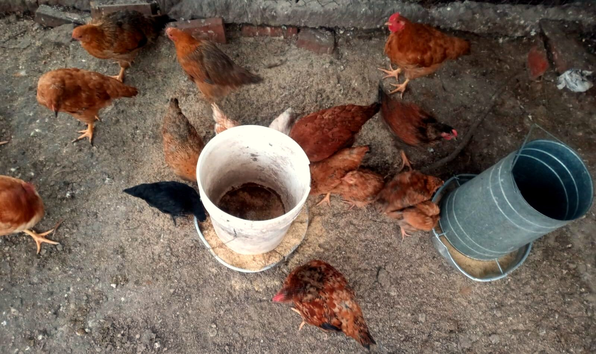

Taller vivencial · LibreIncu
Dietas de elaboración propia, sin núcleo industrial ni antibióticos.
Programa
Inscripción
Taller vivencial: alimentos agroecológicosSábado 14 de noviembre · 14 a 19 h · Cooperativa Gallo Rojo
¡Listo! Tu inscripción quedó registrada.
Nos vemos el sábado 14 de noviembre a las 14 h en la Cooperativa Gallo Rojo. Te escribimos por WhatsApp con la dirección exacta.
Mientras tanto, podés recorrer la cartilla de alimentación agroecológica.
Ir a la cartilla→Las inscripciones cerraron.
El cierre fue el miércoles 11 de noviembre. Si querés venir igual, escribinos por WhatsApp y lo vemos.
WhatsApp 351 735 0189↗